Akcia - 2 izbový byt popradská ul. - Terasa - novozrekonštruovaný
Západ, Košice
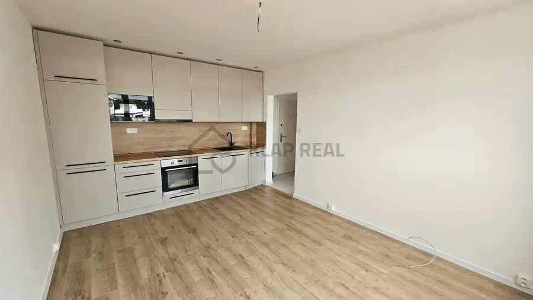
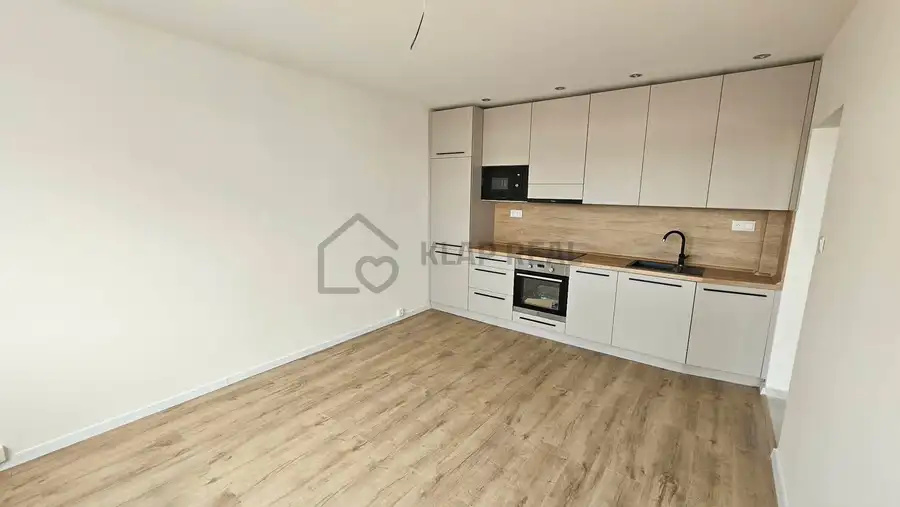
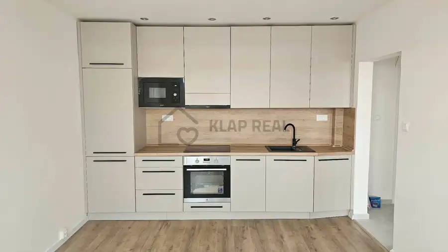
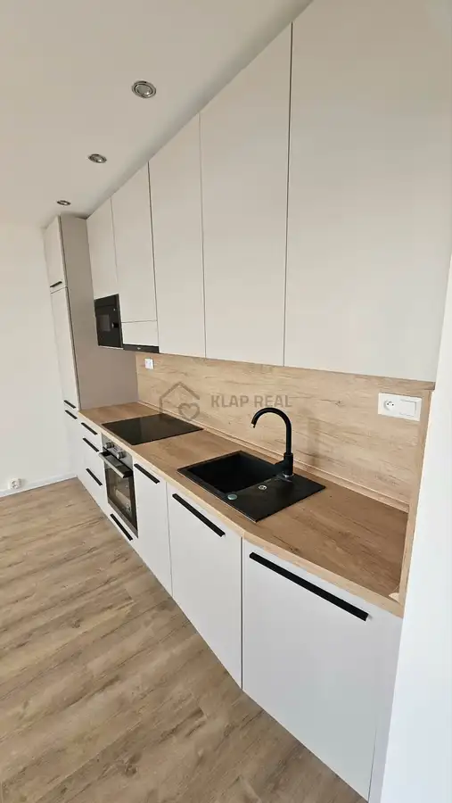
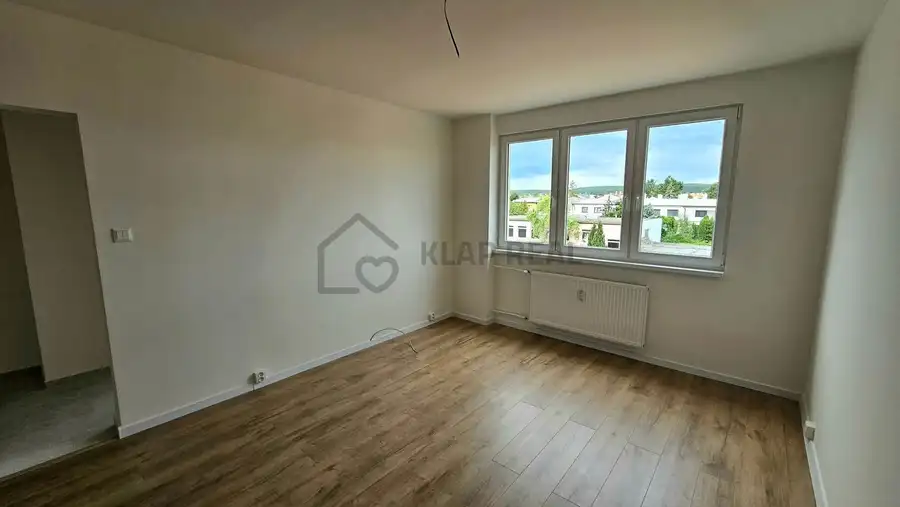
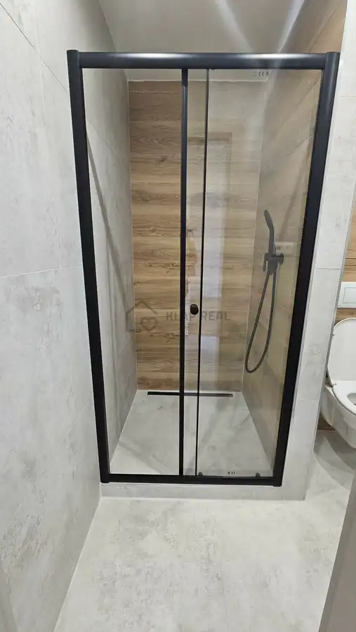
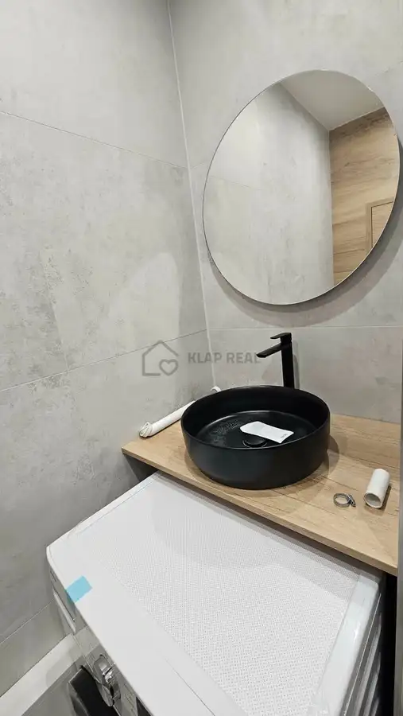
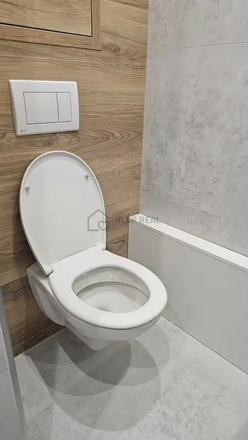
- Dispozícia2-izbový
- Plocha37 m²
- Poschodie3. z 4
- StavKompletná rekonštrukcia
O nehnuteľnosti
** NOVINKA ** Ponúkam na predaj NOVOZREKONŠTRUOVANÝ 2-izbový byt - Popradská ul. - sídl. Terasa, Košice-Západ - na 3. poschodí zo 4.Nachádza sa v zateplenom zrekonštruovanom bytovom dome bez výťahu, v blízkosti supermarketu LIDL a plnej občianskej vybavenosti.Orientácia : Západ.Byt je v osobnom vlastníctve, výmera 37 m2. K nemu prislúcha pivnica. Byt je bez loggie.BYT PREŠIEL NOVOU MODERNOU KOMPLETNOU REKONŠTRUKCIOU (bola zmenená dispozícia bytu) :- nové plastové okná so žalúziami,- murované jadro, nová sanita - murovaný zasklený sprchový kút so žľabom, umývadlo, automatická práčka, zrkadlo s podsvietením, vývod na práčku, závesné WC,- obklad, dlažba, plávajúca podlaha,- nová kuchynská linka na mieru so zabudovanými spotrebičmi (elektrická sklo-keramická varná doska, elektrická rúra na pečenie, digestor, chladnička s mrazničkou, mikrovlnná rúra),- nové interiérové dvere + obložkové zárubne,- nové vchodové bezpečnostné dvere,- znížený strop v celom byte, bodové osvetlenie na chodbe, v kuchyni, v kúpeľni a WC,- nové stierky,- nové radiátory,- nové rozvody elektriny, vody a odpadu,- predpríprava na internet,- menené stupačky.** BYT JE KÚPOU IHNEĎ VOĽNÝ ! **** BYT JE VHODNÝ AJ AKO INVESTÍCIA NA PRENÁJOM ! **Fotky sú reálne.V našej réžii je :- kompletný právny servis, ktorý je zabezpečený advokátskou kanceláriou (autorizovaná kúpna zmluva),- bezplatná pomoc pri vybavovaní HÚ a pri poistení nehnuteľnosti profesionálnym hypotekárnym špecialistom,- pomoc so zabezpečením znaleckého posudku prostredníctvom súdneho znalca,- protokolárne odovzdanie nehnuteľnosti.* Podrobné informácie, viac fotiek a celú ponuku nehnuteľností si môžete pozrieť na našej stránke www.klapreal.sk *V PRÍPADE ZÁUJMU VOLAJTE NA č. : 0918 615 492 - Jana Klapková,alebo mi napíšte na mail. adresu : janaklapkova131@gmail.com
Parametre
- Bezpečnosť
- Bezpečnostné dvere
- Cena vrátane energií
- Nie
- Druh
- 2 izbový byt
- Dátum zverejnenia
- 31. 07. 2026
- Energetický certifikát budovy
- nie je
- Podlažie
- 3
- Počet izieb / miestností
- 2
- Počet nadzemných podlaží
- 4
- Počet pivníc
- 1
- Rok poslednej rekonštrukcie
- 2026
- Rok výstavby
- 1973
- Stav nehnuteľnosti
- Kompletná rekonštrukcia
- Typ
- Predaj
- Typ konštrukcie
- Panelová
- Vybavenie
- Pivnica, Verejné parkovanie
- Vykurovanie
- Ústredné
- Úžitková plocha
- 37 m²
Kde to je


Mohlo by Vás zaujímať
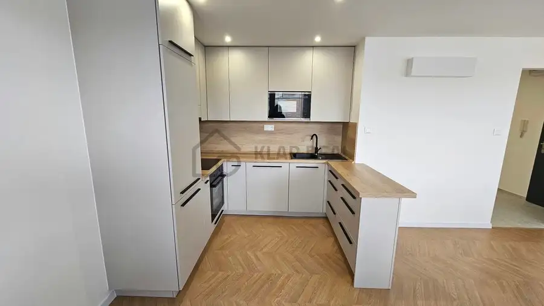
BytNové 237 980 €NOVINKA 4 izbový byt - SPUTNIKOVÁ ul., Nad Jazerom - NOVOZREKONŠTRUOVANÝ, ihneď voľný Nad jazerom, Košice 4-izbový71 m²7. podlažie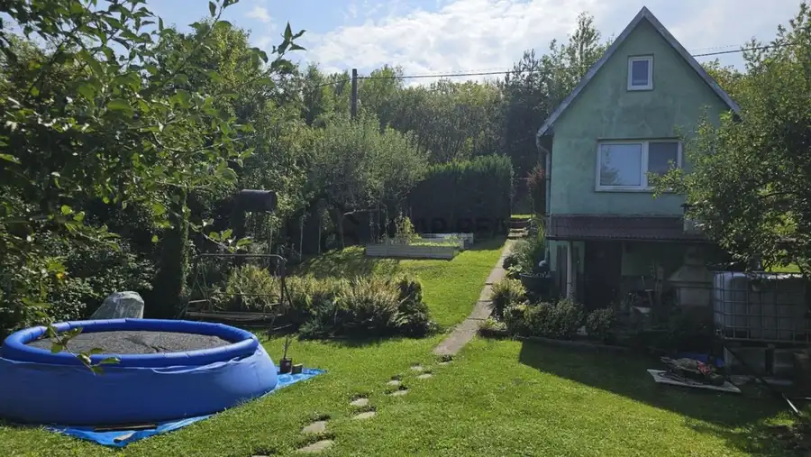
Záhradná chatkaNové 84 900 €AKCIA - Murovaná chata so záhradou - Čičky - Košice - záhradkárska lokalita Západ, Košice 55 m²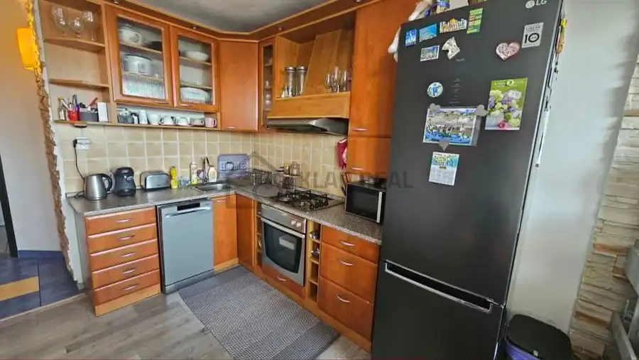
BytNové 209 900 €NOVINKA - 3 izb. byt so 6-m dlhou loggiou - KALINOVSKÁ ul. - Furča Dargovských hrdinov, Košice 3-izbový71 m²7. podlažie